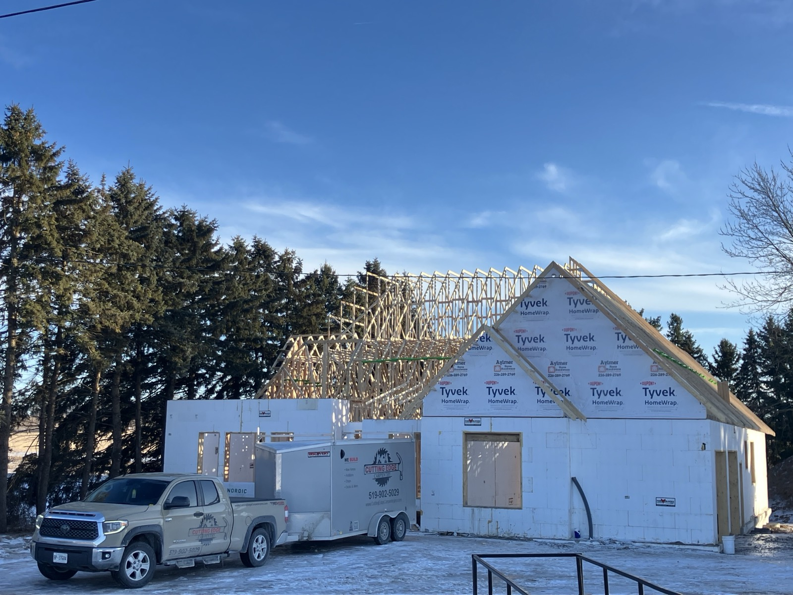

Custom Homes
Custom home framing, builder support, and site coordination for residential builds.
Learn MoreLocal carpentry services
Residential carpentry, framing, decks, fences, additions, garages, and exterior woodwork around London and Straffordville.
Local carpenter serving the region
Cutting Edge Carpentry is based at 55737 Main Street in Straffordville and reviews residential carpentry projects in London, Straffordville, St. Thomas, Aylmer, Tillsonburg, Dorchester, Komoka, Lambeth, Byron, Ingersoll, Woodstock, and nearby communities when the scope and schedule are a fit.
Whether you need custom home framing, renovation carpentry, a deck, a fence, a porch, an addition, a basement frame, a garage, a shop, or exterior wood refinishing, the team brings clean workmanship, reliable communication, and practical jobsite experience to the project.

Services available
Explore local carpentry services available in London, Straffordville, and nearby Southwestern Ontario.
Custom home framing, builder support, and site coordination for residential builds.
Learn MoreCottage-focused residential builds planned around structure, exterior details, and site conditions.
Learn MoreRough framing and structural carpentry support for new builds, additions, garages, and renovation projects.
Learn MoreFraming and carpentry support for renovations that need careful structure, tie-ins, and clean workmanship.
Learn MoreFraming and construction support for added living space and clean structural tie-ins.
Learn MoreWall framing and layout carpentry for lower-level renovation projects.
Learn MoreFunctional framed spaces for storage, tools, work, and property use.
Learn MoreOutdoor spaces built for everyday use, weather exposure, and a clean connection to the home.
Learn MoreRoofed outdoor structures and porch carpentry planned around access, structure, and weather protection.
Learn MoreWood fence construction plus exterior wood protection for decks, fences, and outdoor structures.
Learn MoreFAQ
Questions homeowners often ask before requesting local carpentry work.
Yes, nearby requests can be reviewed for communities such as St. Thomas, Aylmer, Tillsonburg, Dorchester, Komoka, Lambeth, Byron, Ingersoll, and Woodstock. Send the exact address so travel, schedule, and project fit can be confirmed.
It can. Larger framing, addition, garage, shop, deck, or custom home work may be easier to schedule farther from the home base than a very small repair. The address and scope help confirm fit.
Include your nearest community, full address if available, project type, rough timing, photos, measurements, drawings, and any permit or engineering information you already have.
Yes. Cutting Edge Carpentry can review residential carpentry work for homeowners, builders, and contractors when the carpentry scope, site access, and schedule are clear.
Request a local quote
Send your project location and details so the team can review the work and follow up with the next step.
Location
Serving London, Straffordville, and nearby Southwestern Ontario with residential carpentry and construction.